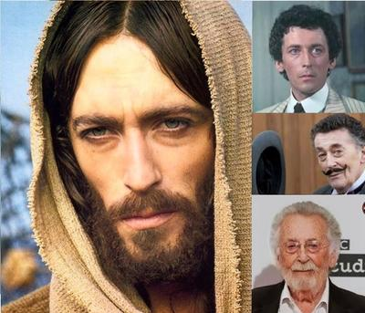

Cada Semana Santa suele ocurrir todavía un pequeño milagro mediático: muchas personas que buscan en su televisor la miniserie «Jesús de Nazaret», vuelven a santificar, sin darse cuenta —aunque sea visualmente—, al actor británico Robert Powell; el hombre que, sin proponérselo, terminó convirtiéndose en el «rostro oficial» de Jesús para buena parte del planeta. Otros, devotos cristianos, llegan aún más allá: tienen en algún sitio de su hogar una fotografía de Powell interpretando el papel que lo dio a conocer mundialmente, y lo ven como la imagen misma del Maestro de Galilea. Incluso si buscas en Google Lens con una foto de Powell, verás alguna publicación cristiana identificándolo directamente como Jesús de Nazaret.


¿Cómo pasó la imagen de este actor británico a convertirse en una estampa cristiana tan bendecida? —La historia tiene todos los ingredientes del absurdo religioso-cultural: Robert Thomas Powell (n. en 1944) es un actor de cine y televisión inglés, que se hizo famoso por su papel en la miniserie «Jesús de Nazaret» filmada en Túnez en 1977, bajo la dirección de Franco Zeffirelli[1]. Aunque «la producción fue pensada como una película, debido a su extensión (seis horas y media) terminó convertida en una miniserie para televisión.»[2]
Resulta interesante que Powell audicionó originalmente para el papel de Judas, pero por recomendación de la esposa de uno de los productores, se le asignó el papel de Jesús. Zeffirelli deseaba para el papel de «Cristo» a un actor de la categoría de Dustin Hoffman o Al Pacino, por ser los más valorados en esa década. «El único problema es que, después de escoger a Powell en el papel de Jesús, tuvieron que lidiar con el hecho de que él convivía con una mujer sin haber contraído matrimonio», relató el periodista Quentin Falk, en su libro ‘Extraños momentos en la historia de la televisión’. Y «Después de que se conoció que sería el “Mesías”, aparecieron titulares como “Jesús vive en pecado con su novia”, por lo que Powell tuvo que casarse con ella de inmediato», agregó Falk.»[2]
Pero ocurrió algo mucho más curioso: después de la serie, el rostro de Powell «comenzó a adornar las casas, las iglesias, los centros de oración de miles de lugares católicos alrededor del mundo.»[2] Sí, la gente comenzó a identificar su imagen como una representación verdadera del mismo Jesús. Y a partir de entonces, se desató hacia él una devoción visual imprevista e inesperada.
Hasta hubo quienes terminaron venerándolo. No es exageración, el propio Powell relata esta anécdota: «Una vez estaba en Venezuela grabando una serie italiana. Y era Semana Santa, y resulta que cuando entramos a una iglesia que había por allí se me acerca un señor y me dice sonriendo: “Es curioso, entré en esta iglesia porque la imagen que tenemos detrás del altar y veneramos es precisamente usted”».[2] Algo digno de un estudio antropológico.
Powell, como actor profesional que no deseaba quedar encasillado, intentó escapar del personaje que lo hizo famoso. Se dice que nunca más se dejó crecer el cabello, y trató también de no dejarse crecer la barba, porque en todas partes donde iba le pedían tomarse una foto con él (como si fuera el mismo Jesús), aparte de pedirle autógrafos. Además, obtuvo reconocimientos profesionales importantes por otras interpretaciones: como el Premio al Mejor Actor en el Festival de Cine de Venecia en 1982, por su papel en «Imperativ», y destacó en otros papeles, como su actuación como Victor Frankenstein en 1984[1], continuando su carrera con profesionalismo.
Pero nada de eso importó demasiado. La gente no dejaba de identificarlo con Jesús. Al grado de que se dice que Powell tuvo que someterse a un tratamiento psiquiátrico, aunque esto nunca fue confirmado por el actor[2]. Pero lo cierto es que si medio planeta te mira como si acabaras de bajar del cielo, cualquiera necesitaría terapia. Porque cuando interpretas a Jesús, no sólo te encasillan… te crucifican mediáticamente para siempre.
El caso es que a Powell su rostro ya no le perteneció del todo. Y por eso no es de extrañarse que todavía en Semana Santa, alguien le ponga una vela a su fotografía en el papel de Jesús. En algún lugar del mundo —incluso ahora mismo— hay una imagen de Powell con mirada mística, y alguna persona piadosa, con toda buena fe, lo venera con devoción. Sin darse cuenta de que no adora al predicador del siglo I, ni a una figura histórica comprobada, sino a un actor británico filmado en Túnez en los años 70. La religión tiene estas ironías.
Pero el problema de fondo es que la mayoría de las personas en Occidente adoran a un Jesús de rasgos europeos. En efecto, resulta muy revelador que la imagen popular de Jesús —y reforzada involuntariamente por Powell— suele ser la de alguien de piel blanca, ojos claros, cabello castaño suave, y rasgos europeos. Lo cual choca frontalmente con lo que hoy sostienen historiadores y antropólogos. Porque si Jesús existió, se trató de un judío del siglo I del Cercano Oriente. Lo que significa que tendría una piel más oscura, rasgos semitas, y un contexto cultural completamente distinto al europeo.
Pero entonces, ¿de dónde salió el «Jesús blanco»? —Definitivamente no proviene de la historia, sino del arte. Durante siglos, pintores europeos representaron a Jesús a su propia imagen, y la Iglesia validó esas representaciones. Vino después el cine —como en el caso de Powell— y no sólo heredó, sino que amplificó ese modelo. Se trata de un fenómeno bien conocido: las culturas tienden a imaginar a sus dioses parecidos a ellas mismas. Decía el poeta y filósofo griego Jenófanes de Colofón, que los seres humanos crean a sus dioses a su propia imagen y semejanza: los etíopes los hacían de piel oscura y nariz chata, mientras que los tracios los imaginaban rubios con ojos azules. Y para ilustrar lo absurdo de esto, escribió que si los caballos y los bueyes tuvieran manos y pudieran pintar, los caballos dibujarían dioses con forma de caballo y los bueyes con forma de buey.
En fin, con todo esto, el caso de Robert Powell expone algo realmente interesante: nadie sabe cómo era Jesús (si es que existió), pero millones de personas sienten que sí lo saben, y ese «conocimiento» viene del arte europeo, y hasta de una producción televisiva de 1977. Es decir que la fe visual moderna no nace de revelaciones divinas, sino de pinturas artísticas, pero también de casting, maquillaje e iluminación cinematográfica.
Actualmente Robert Powell, quien nunca logró despojarse de ese estigma, vive discretamente en el Reino Unido. El pasado 1 de junio cumplió 81 años[1], y ha seguido trabajando, sobre todo como actor y narrador. Pero su destino quedó sellado hace décadas. No importa cuántos papeles haya hecho después. Para el mundo siempre será «Jesús… pero el de la tele».
Y mientras quizás alguien le enciende una vela en esta Semana Santa, su legado seguirá siendo uno de los ejemplos más curiosos —y reveladores— de cómo la religión, el arte y la cultura, pueden mezclarse hasta el punto de confundir ficción con realidad.
[Godless Freeman]
Comentarios
Comments powered by Disqus